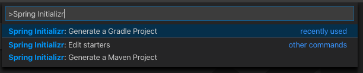
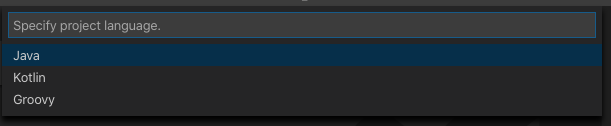
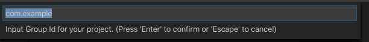
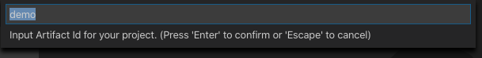
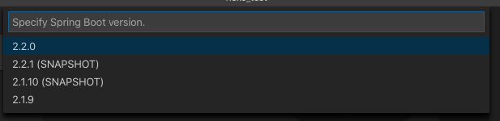
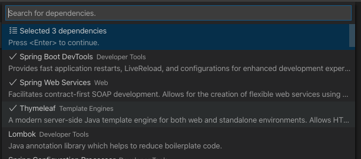

概要
タイトルの通り、VS CodeからSpring Bootプロジェクトを作成してHerokuにデプロイするまでを備忘録として残しました。
前提
- 以下がインストール済みであること
- VS Code
- JDK
- Herokuのアカウントを作成済みであること
Spring関連のExtention導入
VS Codeに以下のExtentionをインストールします。
- Language Support for Java(TM) by Red Hat
- Spring Boot Extension Pack
- Maven for Java
Spring Bootプロジェクト作成
VS CodeからSpring Initializrを使用できます。
F1キーでコマンドパレットを開き、
Spring Initializr: Generate a Gradle Project
を実行します。
言語を指定します。ここでは当然Javaですね。

パッケージ名を指定します

プロジェクト名を指定します
今回は「heroku_spring」としてみます。

バージョンを選びます。2.2.0で良いのではないでしょうか。

必要なパッケージを選びます。とりあえず以下があれば大丈夫かと思います。
- Spring Web Services
- Spring Boot DevTools
- Thymeleaf
- お好みでLombok
以下のようなDB関連のパッケージもあとで追加しますが、今は大丈夫です。
- MySQL Driver もしくは H2
- Spring Data JPA

フォルダの作成場所を指定したら、プロジェクトフォルダができているはずです。
Controller追加
/src/main/java/com/example/heroku_spring
のなかにcontrollerフォルダを追加して、
以下のHelloController.javaを作成します。
1 | package com.example.heroku_spring.controller; |
デバッグしてhttp://localhost:8080/ で確認してみましょう。
Herokuへのデプロイ
Heroku CLIをbrewでインストールします。
1 | $ brew tap heroku/brew && brew install heroku |
CLIを利用するために初回のみHerokuアカウントの認証が必要です。
以下コマンドを実行すると認証用URLが表示されるので、そこから認証を完了してください。
1 | $ heroku login |
herokuアプリをcreateコマンドで作成します。
アプリのURLとGitのリモートリポジトリのURLが発行されるので、控えておきます。
1 | $ heroku create |
プロジェクトフォルダでgit initします。
1 | $ git init |
先ほど取得したリモートリポジトリにpushします。
1 | $ git remote add heroku https://git.heroku.com/example-example-83355.git |
アプリ作成時に取得したURLにアクセスして
Hello Worldが表示されたら成功です。